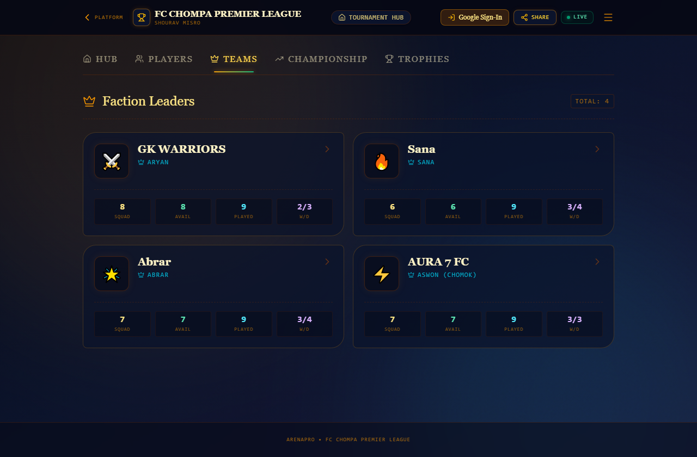

Draft Recap • By ArenaPro Editorial • 5 min read
Auction Draft vs. Spin-the-Wheel vs. Snake Draft: Which Team Selection Format Fits Your League?
Key Takeaways
- Auction Drafts prevent one lucky first pick from dominating an entire tournament when skill gaps exist.
- Always enforce a Max-Safe-Bid reserve rule so captains cannot spend 95% of their budget on two players and leave slots empty.
- Combining a Spin Wheel nomination with live Auction bidding gives you both suspense and fair pricing.
Comparing the Three Most Popular Draft Formats
In community leagues where players range from former academy standouts to weekend regulars, unbalanced teams ruin the season by Week 2. Selecting the right draft mechanic solves parity before a single ball is kicked.
| Criteria | Auction Draft | Spin-the-Wheel | Snake Draft |
|---|---|---|---|
| Competitive Parity | Very High (market pricing) | Medium (random) | High (if pool is even) |
| Event Excitement | High (live bidding wars) | High (roulette suspense) | Medium |
| Average Duration | 35–60 mins | 15–25 mins | 20–30 mins |
| Best For | Competitive leagues & big gaps | Friendly / mixed-skill cups | Fast, structured drafts |
Why Budget Guardrails Are Essential in Amateur Auctions
A classic amateur auction mistake happens when an inexperienced captain spends 900 out of 1,000 coins on two forwards and has only 100 coins left to sign six defenders and a goalkeeper.
ArenaPro solves this automatically in its Live Auction Room by computing Max Safe Bid = Remaining Budget − (Remaining Required Slots × Minimum Reserve Price). Captains can bid aggressively from their phones without ever breaking squad math.

Frequently Asked Questions
How does the Spin Wheel + Auction hybrid work?
The organizer filters undrafted players (for example, Goalkeepers only), spins the wheel to randomly nominate the next player on the block, and captains then bid live for that player.
What happens to leftover undrafted players at the end of a draft?
ArenaPro includes an Auto-Fill Remaining button that distributes undrafted players evenly across teams by position.